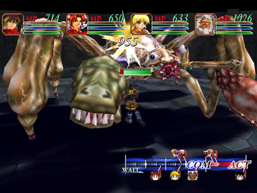
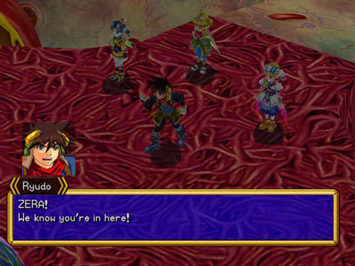
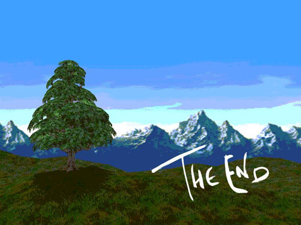

Оглавление
Введение
Глава 1
Глава 2

ГЛАВА 2
27. Garlan Village
Character Levels: Ryudo 33; Elena 33; Mareg 34; Tio 33
Мы прибыли в деревню, где родился Риудо. Но, похоже, здесь ему не очень рады. Когда-то давно его брат Мелфис любил дочь старейшины, но, поддавшись темным силам, убил ее, чтобы получить истинную власть и могущество. Риудо тогда просто убежал. Даже его лучший друг Гутта считает его трусом и предателем. Он хочет пойти и лично убить Мелфиса. Однако Риудо доказывает ему, что у него нет ни шанса победить Мелфиса в бою. Кроме того, у Мелфиса в руках священный меч, которому поклонялась деревня. Деревня ненавидит Мелфиса за то, что он украл меч и убил девушку, а Риудо за то, что убежал и еще немножко за то, что Мелфис его брат. Но на данный момент это неважно. Скай, рассказавший все это Елене, не захотел назваться и оставил Елену в неведении о том, кто поведал ей историю Риудо. Проводим "Всего лишь ночь" в таверне, собираем группу и идем на поиски Мелфиса. Риудо думает, что найдет его в том же самом месте, где была убита девушка, и половина деревни, ушедшая ее искать. Вперед!
28. Grail Mountain
Character Levels: Ryudo 33-36; Elena 33-36; Mareg 34-36; Tio 33-36
Да уж. Если эти места и можно было бы назвать красивыми, то явно не сейчас. Куча отвратительной черной слизи, куча монстров не самых сильных, но и не самых слабых. Не хотел бы я жить в деревне близь такого места. Придется изрядно побегать, потолкать статуи, подраться. Зато опыта, МР и SP тут вдоволь. Уровень не очень запутанный, но довольно длинный. Список предметов находящихся на территории этой зоны: 'Makibishi', 'Face Paint', 'Potion of Azure', 'Grail Fruit', 'Healing Fruit', 'Dark Armor', 'Move Blessing', 'Bonds of Trust', 'Earthen Axe', 'Dynamite', 'Fairy Ribbon', 'Grail Fruit', 'Gold Feather', 'Sword of Justice', 1000Gх3 и 3000Gх2 монет.
В конце уровня нас ожидает Мелфис. Он немного поспорит с Риудо о том, в чем же заключается истинное правосудие. Один говорит, что в Мече правосудия, другой говорит, что в сердце каждого, но меч это тоже хороший аргумент, если он острый, но не обязательно Меч правосудия. В общем, они сильно поспорили, в результате чего пришлось проверять все на практике.
Boss VII
Melfice (19000)
Sword (11,000) Regenerator (???)
Сложность: Очень высокая
EXP 1500
G 0
SC 3600
MC 1800
Предметы: Maken Valborg
Book of Swords
Soul of Asura
Спец приемы:
Demon Horde Slash: Major Attack; Special
**Wailing Soul Slash: Major Attack; Single
Wow!: Raises ATK 1; Single
Gravity: Draws party to one member; all
Poizn: Minor damage; range; poison
Tremor: Earth attack; minor damage; range
Diggin': Raises DEF 1; all
Shhh: Blocks Magic; single
Runner- Raises Move 1; all
Speedy: Raises Act 1; single
*Evil Horn Attack: Major attack; all
*Quake: Earth Attack; Major damage; all
* Атаки, которые он делал после того, как я убили меч.
** Эти атаки он не делал в данной битве, но я уверен, что мог бы.
Я был почти согласен, что правосудие в его мече. Особенно после того как узнал, что на него не действуют атаки оружием. На Мелфиса НЕ действуют никакие останавливающие и запрещающие заклинания, так что пытаться их колдовать даже не стоит. Тут есть 2 пути, ведущих, к вашей победе. Первый это убить магией меч, желательно массовой и мощной т.к. На Мелфиса она тоже действует неплохо. А затем бить Мелфиса только ударами, имеющими возможность "cancel". Второй вариант - одним из персонажей, желательно имеющим большой класс брони и сопротивления блокирующей магии, лечить и восстанавливать всю команду, а другими бить Мелфиса самыми сильными СП и магией. Не стоит забывать такую важную особенность СП Тио, которая кроме того что имеет эффект "Cancel" так еще и бьет не одного, а врагов которые находятся вряд. Т.к. в данный момент все 3 противника находятся в одном и том же месте, то соответственно удар прерываться будет у всех. Хотя относится это замечание и к другим битвам.
После битвы у Риудо неожиданно проснутся братские чувства. Мелфис на некоторое время станет тем, кем был ДО того, как в него вселился Валмар. Но перед смертью Мелфис скажет Риудо, что Меч, который мы ищем, находится на востоке. Риудо охватывает ярость, он направляет свой меч на Елену, но, не дойдя до нее, падает в беспамятстве.
29. Garlan Village (2nd visit)
Character Levels: Ryudo 36; Elena 36; Mareg 36; Tio 36
Дальше нам предстоит долго наблюдать, как Елена с Миленией пытаются вернуть Риудо из состояния комы. Как сам Риудо пытается избегнуть порабощения темными силами. Несколько раз повторятся его воспоминания детства, но он справится с темными силами пытающимися поработить его душу. Мелфис скажет, что Валмар нельзя победить с помощью силы, а только лишь с помощью веры и чистого сердца.
На могиле Мелфиса соберется чуть ли не вся деревня. Они наконец-то осознают скрытый смысл слов, что сила не в идолах, а в сердцах тех, кто верит в справедливость. Ну а нам пора. Местонахождение меча нам известно, так что вперед!
30. Ghoss Forest West
Character Levels: Ryudo 36-37; Elena 36-37; Mareg 36-37; Tio 36-37
После того как капитан снова высадит вас на берег, и вы распрощаетесь с ним, Мерег скажет, что он хорошо знает эти места и его деревня неподалеку. Компания решает зайти навестить его сородичей. Для этого надо всего лишь преодолеть два уровня непролазных джунглей. Вместо мостов - цветы, в место дорог - листы... Это все конечно красиво и поэтично, но только в стихах. На практике в джунглях заблудиться очень даже легко. Советую не увлекаться поисками всяких шмоток, может статься, что вы просто не найдете выход обратно. Для рисковых приводим список того, от чего они могли бы отказаться:. 'Aromatic Root', 'Healing Incense', 'Sylph's Robe', 'Divine Talisman', 'Dragon Bone Helm', 'Quake Stone', 'Baobab Fruit', 3000G и 1000G монет.
Подошли мы к деревне Мерега...
31. Nanan Village
Character Levels: Ryudo 37; Elena 37; Mareg 37; Tio 37
Мерега встречают как героя. Риудо правда сначала примут за Мелфиса но Мерег скажет что это всего лишь его брат. Ну друзья Мерега - друзья деревни. Двигаем к старейшине и спрашиваем на счет меча. Он мало что проясняет, но дает общее направление более конкретнее чем Мелфис. Затем говорит, чтобы Мерег продолжил путь с нами, дабы помочь нам в наших поисках. После этого старейшина отсылает Мерега на деревенскую площадь, а к Риудо и Елене обращается с просьбой пройти испытание. Он говорит, что никто из местных не может этого сделать, и только сильный духом выйдет целым и невредимым. Ну Риудо конечно же соглашается. Дальше двигаем в палатку испытания.
В самой палатке мы оказываемся в пустой комнате с одним деревенским жителем. После подтверждения нашей готовности он дергает какой-то рычаг, и в полу под нами открывается люк. К этому я был все-таки не очень готов. Дальше нам предстоит встреча с большой белкой и испытание. За 30 секунд надо стянуть хотя бы один орех. Возвращаемся к белкам, смотрим танец и выбираемся из подземелья, прихватив с собой 'Nut of Life'. Когда мы выйдем все нам похлопаю, поздравят и пригласят на праздник. Советую вернуться и пройти испытание еще раз... раза четыре. Кучу призов гарантируется, а в последний раз даже дадут книжку со скиллами.
После разговора со старейшиной и выступления Елены, мы опять будем наблюдать, как главные герои, уединившись, будут мямлить какой-то бред. В конце концов, все испортит Милениа, и вечер чудно закончится ссорой. Но это не помешает продолжить наши приключения.
32. Ghoss Forest East
Character Levels: Ryudo 37-38; Elena 37-38; Mareg 37-38; Tio 37-38
Маленькая зона состоящая из 2-х частей и содержащая некоторое количество пряников:
'Wolf Boots' 'Yomi's Elixir', 'Dragon Scales', 1000G и 3000G.
Ничего особенного.
33. The Great Rift
Character Levels: Ryudo 38-39; Elena 38-39; Mareg 38-40; Tio 38-39
Очень длинная и запутанная зона. 3 уровня беготни, сбрасывания камней и лазанья по лестницам. Особо любознательные смогут поживиться 'Seed of Moves', 'Man iron Clogs', 'Man's Headband', 'Magic Blessing', 'Vaccine', 'Seed of Swift', 'Healing Fruit', 'Blessing Scroll', 1200Gх2 и 3600G монет.
В конце третьей зоны перед вами предстанет стена плотного ветра. Ее будут поддерживать энергией роботы оставшиеся после битвы добра со злом. Тио поговорит с одним из них и скажет, что основной источник находится в разрушенном корабле. Двинемся туда, чтобы отключить это поле.
34. Demon's Law
Character Levels: Ryudo 39-40; Elena 39-40; Mareg 40-41; Tio 39-40
Уровень в основном состоит из битвы с боссами. Немного монстров, немного бонусов: 'Red Bird Stone', 'Panacea', 'Phoenix Hat', 'Hero's Elixir' 3600G.
Дальше нам предстоит собрать волю в кулак подлечиться и встретить первого представителя этой зоны из семейства Боссов.
Boss VIII
Leck Guardian (15000)
Snow Leopard (4600) x2
Сложность: Легкая
EXP 700
G 300
SC 1600
MC 320
предметы: Inferno Battleax
Спец приемы:
Buster Horn- Medium attack; single; can Move Block
Элементарен по своей сути. Особой силой или магией не отличается, так что труда должен не составить.
Сохраняемся восстанавливаемся и двигаем к следующему.
Boss IX
Naga Queen (12500) x2
Сложность: легкая
EXP 750
G 800
SC 0
MC 1280
Предметы: Star Egg
Спец приемы:
Freezing Eye- Medium Damage; Enemy line; Mov -2
Fiora- Move Block; single
Blizzard Edge- Minor attack; special
Опять же не очень сложный босс. Используя СП ваших персонажей, вы быстро научите его хорошим манерам и поведению с путниками.
Опять сохраняемся и бежим дальше. По дороге захватываем 'Halo Armor' и 'Mystic Potion' и бежим в DEMON'S LAW, CONTROL ROOM.
Там будет сидеть такая же девчонка как и Тио. Она попытается заставить Тио напасть на вас, но после того как у нее ничего не выйдет (еще бы! Тио ж не камикадзе), нападет сама.
Boss X
Tio Clone (32500)
Сложность: средняя
EXP 900
G 0
SC 4000
MC 4000
Предметы: Balor
Спец приемы:
Lotus Flower: minor damage; range; can cancel
Silence: Magic block; single
Это не столько сложный, сколько длинный бой. Девчонка имеет тонну здоровья, так что применяйте на ней самые сильные СП и магию. Имеет достаточно мощную защиту от ветра и броню, так что попотеть придется. Так же не забывайте лечить своих персонажей, от смерти никто не застрахован.
Дальше мы отключили вроде как источник питания и соответственно надо возвращаться к той стене.
Выйдя на улицу, мы почти сразу увидим меч. Его вообще сложно не заметить - это махина размером с небоскреб. Похоже, подержать в руках его не удастся. Ну ладно, сначала подойдем поближе, там разберемся.
У самого меча мы встречаем Селину. Она удивлена, что мы смогли забраться в наших поисках так далеко. Почему-то мне сразу не понравилась ее хитрая рожа. А когда она стала резать себе вены с криком "Вармар восстань!" Стало ясно, что опасения были не напрасны. Потом рыцарь самоотверженно принес себя в жертву темному владыке, и из-под меча стало вырастать новое гадкое существо. Надо прекратить это безобразие. Елена превращается в Милениу, а это верный знак того, что скоро начнутся неприятности. Но мы готовы к этому, так что вперед!

35. Valmar's Body
Character Levels: Ryudo 40-42; Millenia 40-43; Mareg 41-43; Tio 40-43
Мы внутри нового только зарождающегося тела темного бога. Разгул для начинающего анатомиста. Побегать по внутренностям, заглянуть в цепи кровеносных сосудов, осмотреть сердце (оно, по крайней мере, похоже). И между делом набрать кучу полезных шмоток:'Golden Potion', 'Potion of Azure', 'Resist Dress', 'Thor Stone', 'Panacea', 'Pretty Bracelet', 'Revival Gem', 'Sage's Hat', 'Ninja Clothes', 'Pretty Bracelet', 'Pretty Bracelet', 'Adamantine Helm', 'Pretty Necklace', 'Fire Charm', 'Medical Medicine', 'Bond of Trust', 'Gold Feather', 'Rainbow Hi-heels', 1500Gх2 и 4500G монет.
В итоге мы прибежим к главному нервному центру этого образования и примем бой!
Boss XI
Valmar's Core (24000)
Left Tentacle (14000) Right Tentacle (14000)
Сложность: низкая
EXP 1600
G 4000
SC 6000
MC 6000
Предметы: Angel Circle; Relief Tag
Спец приемы:
Zap: Lightening Attack; range; minor damage
Suck in: Draws enemies near; all
Это не босс, а какое-то издевательство! Легче наверно только монстры уровней этак 10-15 назад. Магия Zap - эго самый мощный прием! Но мы будем милостивы и быстро прервем существования этого ничтожества! Все СП на главное существо и минут через 5 можно уже очищать меч от всякой слизи об его труп.
Милениа быстренько телепортирует нас из этих гнилых внутренностей. Дальше вообще происходит невероятное, Тио отправляет нас внутрь Меча, который оказался космическим кораблем, способным однако работать и как обычный самолет, хоть и реактивный. Ну что ж решилась проблема доставки этого "кинжальчика" в главный храм к Зере.
На корабле мы снова погрузимся в атмосферу душевных переживаний наших героев, которые как обычно не несут никакой полезной информации. Елена побеседует с Миленией, используя зеркало, да и спать ляжет.
36. St. Heim Papal State (2nd visit)
Character Levels: Ryudo 42-43; Elena 42-43; Mareg 43; Tio 43
Вот тут то и начинается самое интересное. Люди говорят, что рыцари церкви стали убивать мирных жителей. Получаем контроль над партией и первым делом бежим в магазин. Вторым делом в таверну, чтобы сохраниться и восстановиться. Затем натыкаемся на этих рыцарей. Помнится, я давно хотел проверить прочность их панцирей, да и на себя примерить. После того как вы их убиваете, оказывается, что это даже не люди. Быстрее бегите к церкви. Перед самым входом в церковь мы встретимся с Селиной еще раз. Она произнесет речь, а потом кинется на мечи своих солдат. На их месте окажется новый чудовищный монстр, который явно страдает от переизбытка конечностей. Надо прекратить его бренное существование.
Boss XII
Valmar's Heart (21000)
Left Eye (13000) Right Eye (13000)
Сложность: средняя
EXP 1800
G 4500
SC 8000
MC 8000
предметы: Goddess Hi-Heels
Holy Clothes
Спец приемы:
Freeze! Lowers MOV by 1; all
Black Spew: Minor damage; range
Snooze: Sleep status; all
Tremor: Earth attack; minor damage; range
Burnflame: Fire attack; minor damage; range
Def-Los: Lowers DEF by 1; all
Stram: Lowers Act 1; single
Этот босс не вызовет у трудностей, если ваши персонажи полны SP. Сконцентрируйте ваши атаки на Valmar's Heart. Часто лечиться не следует, лучше подождать, когда жизни станут желтыми. Противник не делает сильных ударов, способных снести даже такое количество здоровья за раз.
Чтобы уничтожить Валмар, Елена должна была собрать все его кусочки в себе, а затем должна быть убита Мечем Гранасабер. Это должно предотвратить пришествие Валмар. Она говорит, чтобы все оставались тут, а сама убегает в Собор. Естественно следуем за ней! Находим Зеру, который проводит нас в особую комнату, затем с трепетом начнет рассказывать о нынешнем порядке вещей. Нам покажут красочный мультик, но вот то, что он означает не очень впечатляет. Оказывается Гранас давно мертв, из богов остался только Валмар, и Зера ХОЧЕТ, чтобы день тьмы пришел. Для этого он улетает вместе с Еленой через портал на Луну. Мда… такого поворота событий наверно и ожидали, но верилось с трудом. Тио говорит, что в Гранасабере еще хватит энергии, чтобы отправить нас на луну. Возвращаемся туда, где мы попали на эту карту. Встаем на холмик, и Тио телепортирует в меч. Вперед к звездам!
37. Valmar's Moon
Character Levels: Ryudo 43-46; Mareg 43-47; Tio 43-46
Луна. Значит не американцы тут были первыми. Флага еще нет. Начинаем двигаться вглубь спутника. Всего нам предстоит пройти три зоны, кишащие монстрами. Тротилу бы сюда пару сотен килограммов! И дело с концом. Хотя тогда про Елену можно забыть. Нам море по колено, горы по плечо, авось как-нибудь и на Луне выживем. И заодно соберем кучу полезного: 'Lion Harp`, 'Lion Boots', 'Leo Rex Battleax', 'Potion of Azure', 'Thor Stone', 'Silver Feather', 'Demon Ash`, 'Miracle Elixir', 'Indigo Potion', 'Panacea', 'Moonstone Armor', 'Scarlet Potion', 'Scattering Stone', 'Meteor Scroll', 'Moonlight Tiara', 6000Gх2 и 2000Gх4 монет.
Ближе к центру мы набредаем на комнату VALMAR'S WOMB. Там Зера под куполом запихал Елену под крышку какого-то люка. Как в космос собирается. Его жалкая попытка нас остановить, это ничтожное подобие монстра. Все что встанет у нас на дороге да примет смерть!
Boss XIII
Egg Guardian (28000)
Bit (4800) x4
Сложность: Легкая
EXP 2000
G 3600
SC 10000
MC 10000
Предметы: Angel's Robe
Спец приемы:
Desperate Blow- Medium attack; single
Runner- Raises ACT 1; single
Howlnado- Wind attack; medium damage; all
Это совсем уж детские игрушки. На мелких тварей внимания можно не обращать. Бейте Egg Guardian всем арсеналом, который имеется. Он откинет копыта довольно быстро. Лечить своих персонажей конечно нужно, но необходимости в этом у меня так и не возникло.
После расправы над мелочью мы снова приступаем к главному, а именно: бесполезно долбить в купол и орать проклятия. Милениу конечно он из Елены выдернул, но она (Милениа то есть) отказалась служить и с помощью никому неизвестных сил сумела вытащить Елену за купол. Она возвращается в партию. А теперь руки в ноги и вперед... Вернее назад! К кораблю и прочь с этой планеты. А если кто-то будет ныть и возражать, то отобрать у него меч и двинуть секирой слегка, чтобы не раскисал как баба.
Просто так, конечно, выйти нам никто не даст. По дороге придется зарезать парочку монстров, к сожалению, этой парочки вполне хватит, чтобы прикончить Мерега. Он героически прикрыл наше отступление своей жизнью. Жаль его, хороший мужик был, хоть и лохматый.
38. Cyrum Kingdom (3rd visit)
Character Levels: Ryudo 46-47; Elena 46-47; Tio 46-47
Город горит. Будем надеяться, что Роан сумел выжить в этом хаосе. Проносимся по улицам и видим Роана, зажатого в угол двумя какими-то тварями. Забираем Роана. Он совсем не вкусный, к тому же есть этим тварям уже не дано. Когда кишки наружу, это приводит к несварению. Выслушиваем длительную беседу, где почти каждый высказывает оптимистические мысли по поводу того, что все уже абсолютно бесполезно. Как только Риудо понимает, что тут становится опасно они решают выбираться из города. Добираемся до ворот, попутно разбивая черепа всем встречным монстрам.
39. *2S* RAUL HILLS SPECIAL STAGE
Character Levels: Ryudo 47; Elena 47; Roan 47; Tio 47
Этот уровень абсолютно никак не влияет на ход или сюжет игры. Он предназначен для тех, кто хочет хороших драк и ценных вещей. В принципе он не обязателен для посещения. А вот вещи, которые ждут любопытных: 'Zero Broadsword', 'Rusty Hoop', 'Dull Knife', 'Lore of Magic', 'Platinum Feather' 'Energy Charm', 'Sonic Belt', 'Demon Necklace' 'Blackquartz Helm' 'Astral Miracle' 'Fairy Egg' 'Soul of a Hero' 'Earthen Cuirass'.
40. Cyrum Kingdom South & Birthplace of the Gods
Character Levels: Ryudo 47-52; Elena 47-52; Roan 47-52; Tio 47-52
Мы выходим на полянку и направляемся к старой усыпальнице королевского рода Роана. Он сказал, что там может быть полезная информация, которая поможет понять, как можно убить Валмар. Заходи в небольшое здание. После недолгого разбирательства выясняется, чтобы открыть это место требуется медальон. Роан отдает бранзулетку Тио, и она приводит в действие механизм. Теперь на свежий воздух, на первый этаж и в новую зону Усыпальницу богов.
Подземелье не очень сложное. Главное - запомнить в каком порядке надо включать лампочки. Сначала синий на первом этаже, потом желтый на третьем, затем красный на втором, после выключаем желтый. На пути вам встретится пара боссов.
Boss XIV
Dual Fist (19000) x2
Сложность: Легкая
EXP 1800
G 2400
SC 6400
MC 0
Предметы: Elf King Boots
Спец приемы:
Freeze Down: Medium attack; single; can give sleep status
Бейте их массовыми магиями и СП а потом добивайте либо теми же СП либо обычными ударами. Проблем возникнуть не должно.
Boss XV
Guardian (17000) x2
Сложность: Легкая
EXP 2000
G 3200
SC 0
MC 4000
Предметы: Phoenix Ring
Спец приемы:
Gravity Draws all enemies near one; all
Spark Slice ??? attack; special
Killer Voltage minor damage; enemyline; -1 ACT, -1 ATK
Единственная неприятность этого босса в том, что свой удар Killer Voltage он повторяет слишком часто. Лучше пользоваться слабыми СП, но с эффектом отмены удара, дабы не давать ему возможности его проводить. В остальном, он не сложнее предыдущего.
Дальше мы попадем в комнату с неким роботом, который расскажет историю о том, как люди становились равными богам, получали силу. Кто от тьмы, кто от света. Также она говорит, что Риудо может активировать частицу Валмара внутри себя, и если он сможет полностью подчинить свои эмоции и чувства, то не станет еще одним монстром, а лишь обретет силу, равную силе бога. Риудо идет на это. Но у него не получается. Он превращается в монстра, частицу Валмар.
Между тем народ взволнован. Чтобы как-то их успокоить Елена начинает петь. Эту песню неким образом услышал и Риудо. Он собирает волю в кулак и справляется с темными силами. Когда уже совсем все плохо, Валмар подошел слишком близко к Елене и прочим, появляется Риудо с Мечом Гранасабер в руке и бросает вызов темному богу. Тио переносит их внутрь тела возрожденного Бога.
41. New Valmar
Character Levels: Ryudo 52-55; Elena 52-55; Roan 52-55; Tio 52-55
Главной проблемой этой серии зон станет большое количество боссов. Побегать, конечно, тоже придется, уровни довольно запутанные. Первый босс появится после комнаты с желтыми шарами, когда вы соберете в ней все плюшки, и убьете всех, кто будет вылезать из отсеков, вы пройдете по туннелю и выйдете прямо к нему.
Boss XVI
Valmar Magna (20,000)
Valmar Moth (3200) x2
Сложность: Легкая
EXP 1600
G 320
SC 340
MC 400
Предметы: Mystic Potion
Спец приемы:
Magna Boring- Minor attack; single; Move Block/Magic Block
Не стоит утруждать себя, придумывая как бы с ним справиться. Достаточно обычного потока ваших СП. Не стоит даже беспокоиться на счет лечения/восстановления ваших героев - это вряд ли понадобиться.
Следующий босс вас будет ждать уже в конце третьей части зоны. Сразу после пункты сохранения, пройдя по трубе, вы попадете в комнату, где он охраняет проход к финальному этапу этой зоны.
Boss XVII
Valmar Magna (20,000) x2
Сложность: низкая
EXP 2400
G 6000
SC 200
MC 600
Предметы: Mystic Potion
Спец приемы:
Boom- minor damage; range
Magna Boring; minor attack; single; move block/magic block
Босс представляет ни что иное как два предыдущих сразу. Не стоит особо пугаться, так как количество не означает качество. Проблем они вряд ли доставят, хотя подлечить ваших персонажей иногда придется.
В финальной комнате этой зоны (NEW VALMAR CORE) нам предстанет тот самый Зера, который пообещает показать нам истинную мощь бога и перед нами появится следующий босс.
Boss XVIII
Valmar's Core (49,000)
Сложность: очень высокая
Спец приемы:
Snooze- sleep status; range
Howl- wind attack; minor damage
Destruction Light- major damage; enemy line
Hammer Claw- minor damage; special
Tremor- earth attack; minor damage; damage
Burn Flame- Fire attack; minor damage; range
Dead Claw- minor attack; single; move block
Alhealer- minor healing; all
Spellbinding Eye- Valmar attack; Magic/Move Block abilities; all
Crackle- ice attack; medium damage; single
Day of Judgement- Valmar attack; All element attack; major damage; all; -1
ATK
Avenging Claw- Valmar Attack; major damage; single
Burnstrike- Fire attack; single; medium damage
Zap all- lightening attack; medium damage; all
Howlslash- wind attack; enemy line; minor damage
Это, пожалуй, один из самых трудных противников в игре. Тактика боя должна быть такой: На головах отдельного внимания концентрировать не стоит, это пустая трата времени. Все основные спец приемы должны бить Главную часть монстра. Тио должна применять свой СП на линию врагов, дабы хоть иногда срывать их удары. Не забывайте лечить персонажей. Босс способен провести подряд довольно мощную серию ударов одного-двух коих хватит, чтобы героя приходилось уже не лечить, а воскрешать.
Дальше Зера будет долго орать, что этого не может быть. Почему народ перестал верить фактам? Перед нами очутится Милениа, или кто-то очень похожий. Елена смекнет, что она не настоящая и нам придется драться с девушкой.
Boss XIX
Millenia (23,000)
Сложность: низкая
EXP 0
G 0
SC 6000
MC 0
Предметы: Black Angel Bow
Спец приемы:
Fallen Wings: Valmar attack; all; medium damage
Combo: two consecutive attacks; minor damage; single
Никаких проблем после предыдущего босса возникнуть не должно. Просто применяйте на ней удары с эффектом отмены, и все будет нормально. Даже лечить никого не придется.
После этой битвы все удостоверятся, что это была всего лишь иллюзия (ничего себе иллюзия на 28к хитов!). Потом появится настоящая Милениа, и все будут радостно приветствовать друг друга. Зера смоется, и нам придется его догонять. Правда пол расколет большая трещина, так что догонять придется нам троим (Риудо, Миление и Елене).
42. New Valmar Room of Chaos
Character Levels: Ryudo 55-57; Elena 55-57; Millenia 55-57
Как только вы зашли, проверьте экипировку Милены, сохранитесь и вперед. Зона состоит Только из битв с боссами. Первым, из которых будет данный экземпляр.
Boss XX
Valmar's Tongue (27,000)
Head (9000) Left Hand (18,000) Right hand (18,000)
Сложность: Средняя
EXP 6000
G 0
SC 8000
MC 1000
Items: Golden Potion
Potion of Azure
Indigo Potion
Starlight Tiara
Special Attacks:
Burn- Fire attack; minor damage; range
Spew Venom- Poison attack; minor damage; range
Hellburner- Fire attack; medium damage; single
Huge leap- minor attack; all; cancel
Eat em' alive major attack; single; confusion
Flamethrower- fire attack; medium damage; single
Gluttony- major attack; range
На мой взгляд, босс средней паршивости. После 2-х полных серий СП каждого персонажа, направленных на главную часть, босс пораскинул мозгами, а заодно руками и ногами, клешнями... Или что там у него было. Спец приемов ему, конечно, добавили, но мозгов ни грамма. Да и мы уже слишком круты для таких.
Возвращаемся на исходную позицию, сохраняемся/восстанавливаемся и двигаем дальше.
Boss XXI
Valmar's Eye (20,000)
Left Tendril (20,000) Right Tendril (20,000) Eyeball Bat (20,000) x4
Сложность: средняя
EXP 6000
G 0
SC 8000
MC 1000
Items: Queen Heels
Potion of Azure
Mystic Potion
Indigo Potion
Спец приемы:
Seed of Sleep- Sleep status; range
Runner- Mov +1; all
Seed of Poison- poison status; range
Delta Burst- medium attack; single
Вот этот уже помассивнее предыдущего будет. Перво-наперво, надо убить хотя бы один летающий глаз, дабы они не проводили совместный СП, а затем всю мощь направить на главную тушу. Если вовремя лечиться и восстанавливаться, то никаких проблем не возникнет.
Повторяем процедуру сохранения восстановления и двигаем дальше.
Boss XXII
Valmar's Heart (25,000)
Left Eye (16000) Right Eye (16,000)
Сложность: Легкая
EXP 6000
G 0
SC 8000
MC 1000
Items: Tenma's Dress
Potion of Azure
Mystic Potion
Спец приемы:
Speedy- Raise Act +1; single
Def-Loss- Lowers Defense -1; All
Один из самых легких боссов за последние 2 уровня. Слетает с копыт после 3 раунда. Слаб он на физический урон от мечей, Святого апокалипсиса и других СП моих героев.
Можно сохраниться, но спросите себя, а нужно? Стоит взглянуть на характеристики последнего босса и, если вы все еще не умерли от смеха, то можете бежать и сохраняться.
Final Fight
Zera Valmar (36,000)
Сложность: Средняя
Спец приемы:
Ba-Boom!- Major attack; all
GadZap- lightening attack; Medium damage; single; can paralyze
Вперед! В РУКОПАШНУЮ! Используйте все подручные средства. Можно тратить любые предметы, не экономя тратить ману и SP. Все! Баста! Последний бой, он легкий самый (но только в нашем случае).
Злодей повержен, мир спасен. После долгих сценарных скриптовок, мультиков и беготни нам все же покажут заветную надпись THE END.

Оглавление
Введение
Глава 1
Глава 2